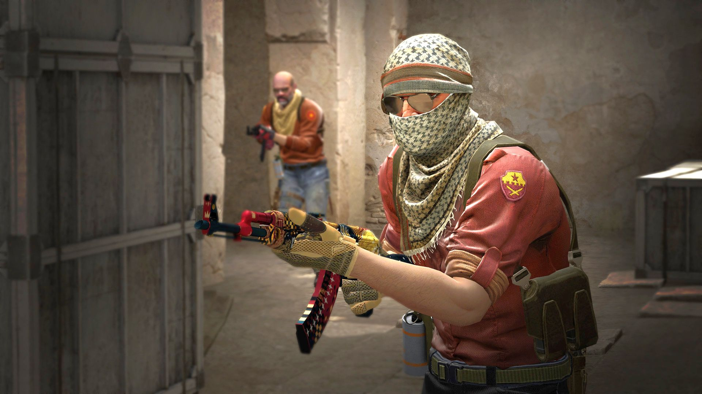

Du ble sikker sendt hit fordi du suger i Csgo, ikke ver redd dette er hjelpen du trenger
Aim
Hvis du vill ha bedre aim er det lurt og gå inn på en side eller trene til du blir god
Du kan også bare spille du for bedre aim jo mere du spiller

crouching
Hvis du skyter og du ikke treffer så må du crouche da går skuddene dine mere rett og da treffer du mer
Du går saktere når du Croucher men du høres dårligere
Shift walk
Shift walking er at du holder in shift og går hvis du Shift walker så høres du mye mindre en når du løper til vanlig du høres også ikke hvis du croucher